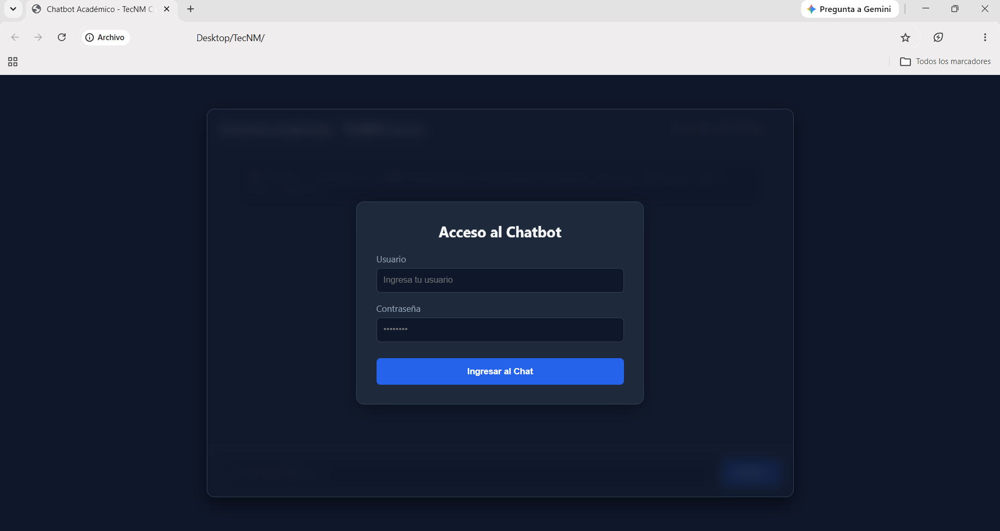
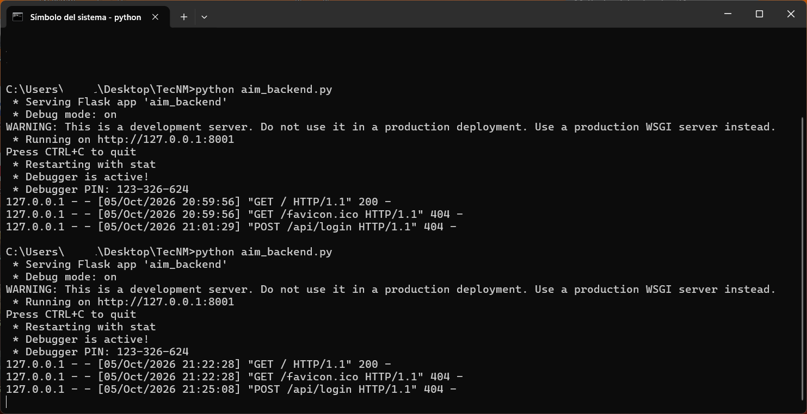
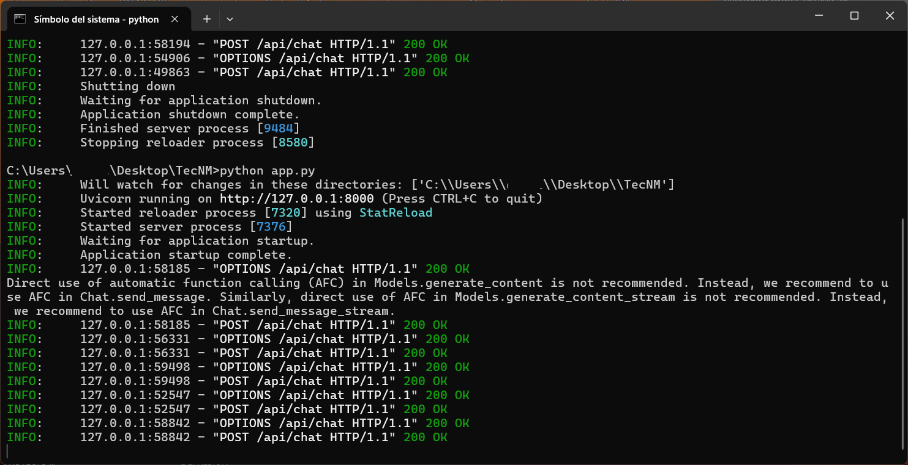
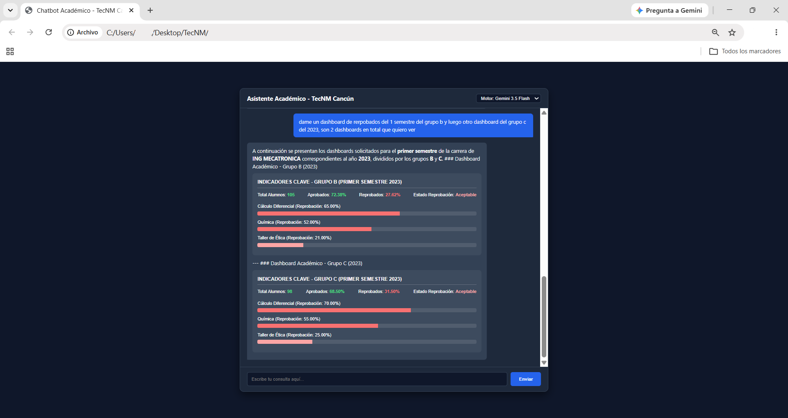

Plataforma de Inteligencia Artificial y Analytics sobre métricas de rendimiento escolar, homologada con DAX y Power BI.

Módulo de inicio de sesión seguro. Los usuarios son dados de alta desde la administración centralizada con almacenamiento cifrado en AES-256.

Servidor Flask encargado de la gestión de identidades, autenticación y validación del cifrado de usuarios en entorno seguro local.

Microservicio en FastAPI / Uvicorn que procesa las consultas del usuario conectándose con el LLM Gemini 3.5 Flash Lite.

El chatbot interpreta el contexto del JSON homologado con las métricas DAX de Power BI y renderiza componentes visuales y tablas directo en el Frontend.
Los credenciales y la base de datos de usuarios administrados están protegidos criptográficamente en repositorios locales.
Variables, estructuras y lógicas de cálculo alimentadas al prompt para mantener 100% de paridad con los reportes de Power BI.
Modelado con Gemini 3.5 Flash Lite, garantizando respuestas en milisegundos y renderizado de tablas HTML con CSS inline.
Despliegue distribuido de dos backends aislados (`:8000` y `:8001`) para impedir la exposición directa de datos institucionales.